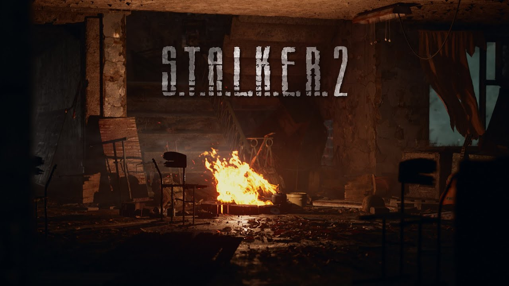

11.11.2021
Студія GSC Game World продовжує старанно розробляти S.T.A.L.K.E.R. 2: Heart of Chernobyl. Нещодавно вона поділилася новим роликом, в якому демонструється запис звуків стрільби для майбутньої гри. На відео показується, що автори вирушили на спеціально підготовлений полігон з усім необхідним обладнанням. Вони вели вогонь з різноманітних автоматів, снайперських гвинтівок, дробовиків, пістолетів і так далі. Стріляли по мішенях, розставлених на безпечній дистанції. Окрема увага в ролику присвячена додатковим звукам, які пов'язані зі зброєю. Наприклад, звучанню при перезарядці і використанні поздовжньо-ковзного затвора.
S. T. A. L. K. E. R. 2: Heart of Chernobyl — основні подробиці Дія сиквела розгорнеться в зоні відчуження Чорнобильської АЕС. Гра буде поєднувати елементи шутера від першої особи, хоррора і імерсивного симулятора.
Історія буде варіативною і відзначиться декількома кінцівками. У процесі проходження користувачам належить приймати рішення, які спричинять за собою наслідки.
16.01.2021
Українська студія GSC Game World продовжує підігрівати інтерес до і без того гарячого очікуваного рольового шутеру S.T.A.L.K.E.R. 2. В окремій публікації на сайті Xbox Wire PR-менеджер GSC Game World Захар Бочаров розповів про перший геймплейний тизер на движку гри, що вийшов наприкінці 2020 року, і про те, як просувається розробка.
Отже, в S.T.A.L.K.E.R. 2 з'явиться новий головний персонаж — сталкер на прізвисько Скіф, чиї дії, за словами GSC Game World, «покладуть початок новому великому розділу в історії Зони». Саме його очима нам показують похмурий та ворожий ігровий світ — дія показаної в ролику сцени відбувається у зруйнованій школі на околиці занедбаного міста Прип'ять. Герой натикається на нещодавно розведене кимось багаття і гітару, але ледве встигнувши озирнутися напівтемряві, він змушений екстрено шукати укриття через потужний викид аномальної енергії з центру Зони (S.T.A.L.K.E.R. без аномалій — не S.T.A.L.K. Потужні викиди відбуваються в Зоні час від часу і можуть вбити миттєво, попереджають розробники.
У GSC Game World заявили, що розробка S.T.A.L.K.E.R. 2 йде «гладко» (хоч би що це означало), окремо уточнивши, що це стосується і версій для Xbox Series. Рейтресинг підтримуватиметься на обох консолях, тоді як більш продуктивна Series X виводитиме картинку в підвищеній роздільній здатності. Власне, ще влітку минулого року ми дізналися, що на Xbox Series X гра підтримуватиме 4K та трасування променів.